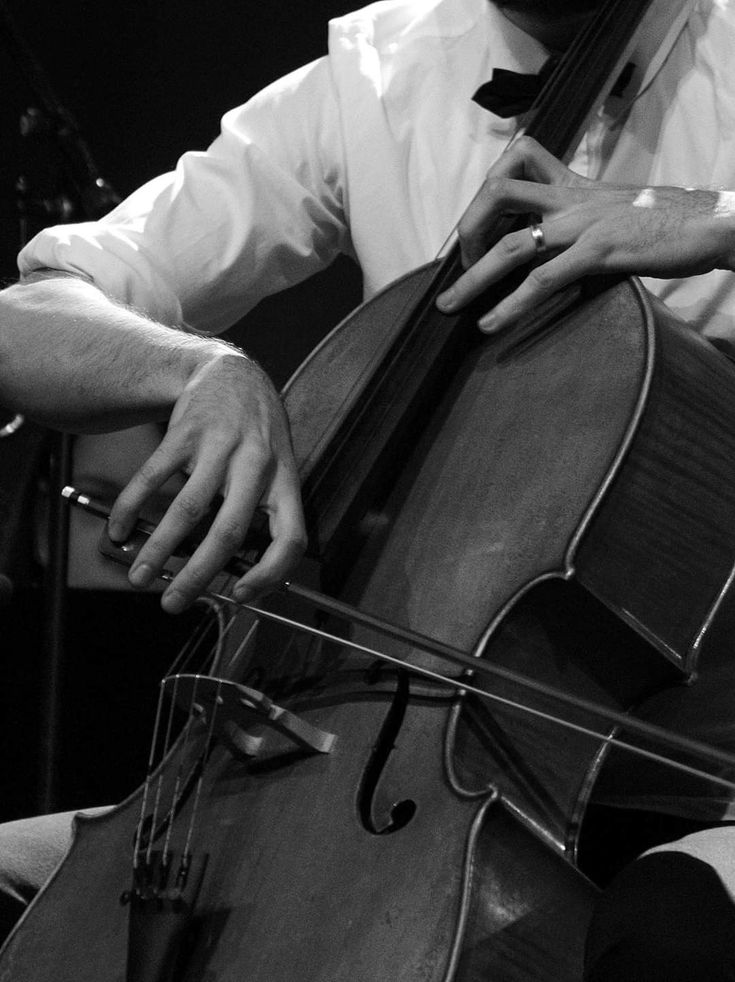

cello, bass musical instrument of the violin group, with four strings, pitched C–G–D–A upward from two octaves below middle C. The cello, about 27.5 inches (70 cm) long (47 inches [119 cm] with the neck), has proportionally deeper ribs and a shorter neck than the violin.

The earliest cellos were developed during the 16th century and frequently were made with five strings. They served mainly to reinforce the bass line in ensembles. Only during the 17th and 18th centuries did the cello replace the bass viola da gamba as a solo instrument. During the 17th century the combination of cello and harpsichord for basso continuo parts became standard. Joseph Haydn, Mozart, and later composers gave increased prominence to the cello in instrumental ensembles. Notable works for the instrument include J.S. Bach’s six suites for unaccompanied cello; Beethoven’s five sonatas for cello and piano; the concertos of Édouard Lalo, Antonín Dvořák, Camille Saint-Saëns, Edward Elgar, and Samuel Barber; the sonatas of Zoltán Kodály and Claude Debussy; and the Bachianas brasileiras of Heitor Villa-Lobos, for eight cellos and soprano. Outstanding cellists of the 20th and 21st centuries include Pablo Casals, Mstislav Rostropovich, and Yo-Yo Ma, among others.
Cellists use a bow to produce sound, drawing it across the strings or using various techniques like pizzicato (plucking the strings). The cello is held between the knees and supported by an endpin that rests on the floor.
The cello is not just for classical music; it’s used in jazz, rock, and even pop music, showing its versatility. Whether you're listening to a soulful solo or the deep, resonant tones in an orchestral piece, the cello's rich history and beautiful sound make it a truly remarkable instrument. Do you play the cello or are you considering learning it?